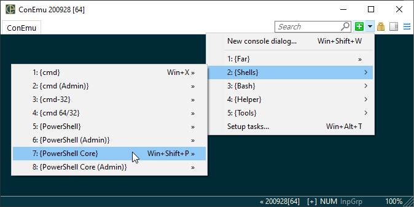

The ‘Task’ is one or more (tabbed or splitted) predefined commands (shells) which you may start anytime by name or hotkey.

Tasks may be configured in the ‘Settings’ dialog.
When you want to create new task absent in the default tasks list you need to know:
In most cases you may open properties of shortcut created by any installer. Just find the shortcut, right-click it, and choose ‘Properties’.
set Var1=Value1 & set "Var2=Value with spaces" & cmd /k vcvarsall.bat x86 -new_console:t:"VS 12.0"
Finally, the task for VS prompt is ready.
Sometimes, if the shell is started from another program you may use ProcessExplorer or ProcessMonitor to detect which command is started, arguments and the working directory.
If you can't do that, just google for alternatives. For example it is hard to find proper arguments for NuGet console started from Visual Studio because VS do not start powershell.exe but run powershell host internally. Just google! For example: